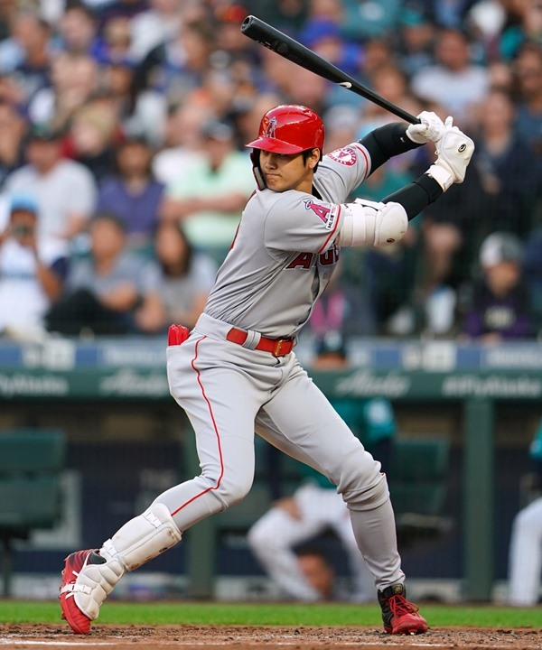
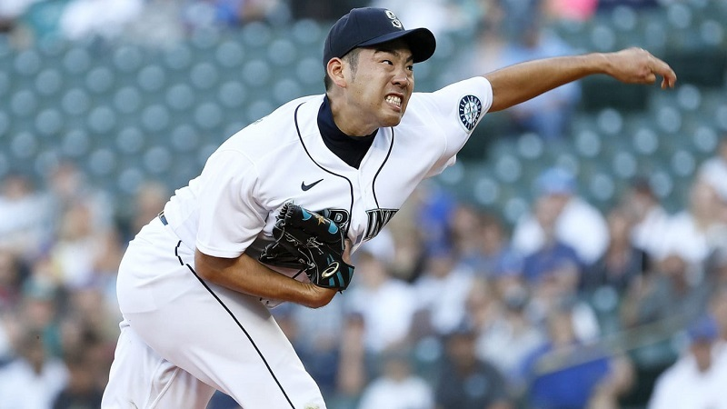
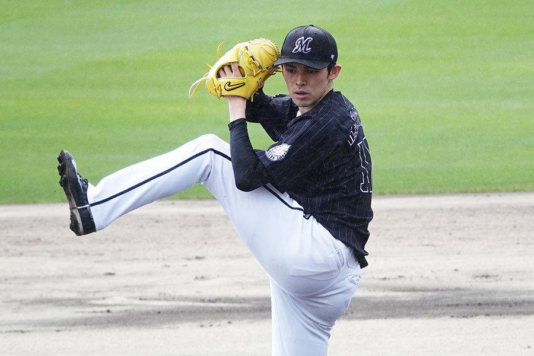

岩手には秀才なプロ野球選手が生まれています。
・大谷翔平投手としても打者としても活躍する「二刀流」の選手として広く知られる。 2012年のNPBドラフト1位で北海道日本ハムファイターズから指名され、2013年の入団以降、投手と打者を両立する「二刀流」の選手として試合に出場した。 2014年には11勝、10本塁打で日本プロ野球(NPB)史上初となる「2桁勝利・2桁本塁打」を達成した。 2016年には、NPB史上初となる投手と指名打者の両部門でベストナインのダブル受賞に加え、リーグMVPに選出された。投手としての球速165km/hは日本人最速記録である。 2017年オフにポスティングシステムでメジャーリーグベースボール(MLB)のロサンゼルス・エンゼルスに移籍。 2018年シーズンから投打にわたって活動し、同年は日本人史上4人目の新人王を受賞。 2021年シーズンでは、2001年のイチロー以来となる日本人史上2人目(アジア人史上でも2人目)のシーズンMVPとシルバースラッガー賞を受賞している。 |
 |
|
菊池雄星選手は、1991年6月17日に岩手県盛岡市で生まれました。
3年春に選抜甲子園に出場すると、初戦から最速152km/hを記録し、大会屈指の左腕としてその名を全国区に轟かせ、岩手県勢初の決勝進出に導くも、決勝では清峰高校の今村猛(広島)との投げあいに敗れ、初優勝を逃してしまいます。
大会を通じて全国的に有名なサウスポーとして有名になった菊池選手は、プロ注目の選手としてスカウトから注目を集めます。
日本プロ野球時代
2010年には埼玉西武ライオンズによる1巡目氏名を受けて、契約金1億円+出来高5,000万円、年俸1,500万円で契約し、背番号「17」に決定。
プロの世界に入ってから数年間は目立った結果こそ残せていなかったものの、3年目の2013年に開幕一軍入りすると、オールスターにも選出されるなど活躍を見せます。
2016年シーズンには自身初となる開幕投手を務めるほどチームからの信頼を勝ち取り、翌年2017年シーズンには最優秀防御率・最多勝利の2冠を達成。クライマックスシリーズでは完封勝利を収めたものの、チームは振るわず、日本シリーズへは進めませんでした。
その後、2018年シーズンに3年連続で開幕投手を務めると、オフにはポスティングシステムを行使してMLB移籍を表明し、メジャーリーグへ挑戦しました。 |
 |
・佐々木朗希愛称は令和の怪物、 日本プロ野球 (NPB) 記録且つ世界記録となる13者連続奪三振、プロ野球タイ記録の1試合19奪三振の記録保持者。 初の平成且つ21世紀生まれにして、21世紀並びに令和初、および2022年現在の現役選手唯一の日本プロ野球公式戦における、日本プロ野球史上最年少の完全試合達成者 |
 |